Nichinan, Tottori: things to do, food and stays
Nichinan · Tottori
Nichinan
Highlighted on the Tottori map.
Stay
イチイ荘
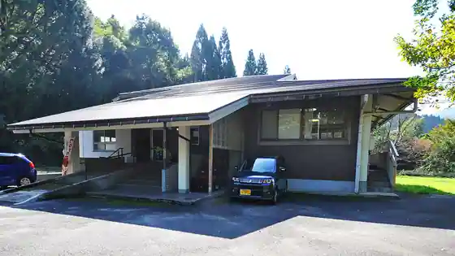
Ichi So
Dining
道の駅 にちなん 日野川の郷
Michi No Eki Nichinan Hino Kawa No Sato
ショップまるごととまと
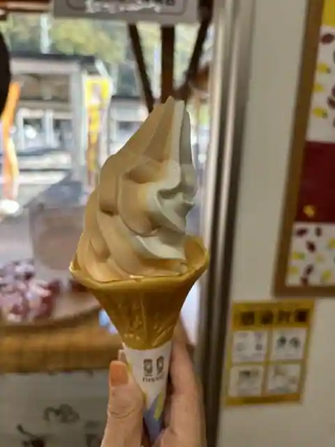
Shoppu Marugototomato
蓬莱
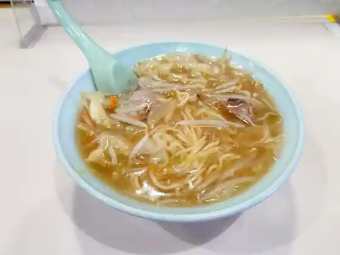
Horai
レストランほっとす
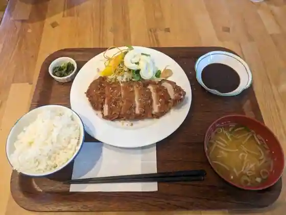
Restaurant Hottosu
割烹食事 井谷
Kappo Shokuji Itani
お食事処ホームランド多里
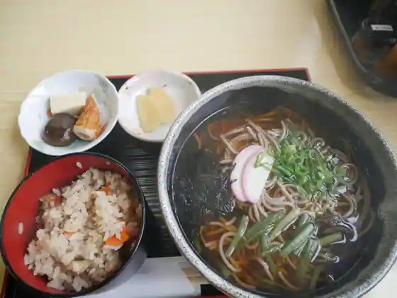
O Shokuji Tokoro Homurando Ta Sato
アメダス茶屋
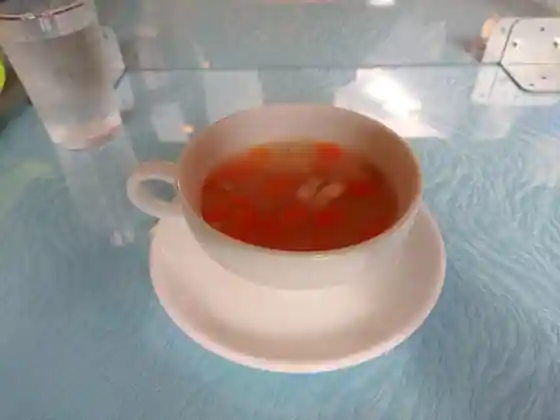
Amedasu Chaya
キッチン みなみ
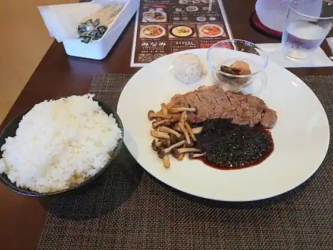
Kitchen Minami
にしむら屋
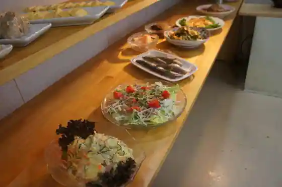
Nishimura Ya
さくら
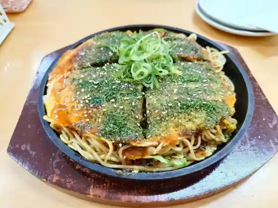
Sakura
そば処 かめや
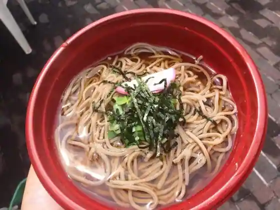
Soba Tokoro Kameya
ふるさと日南邑
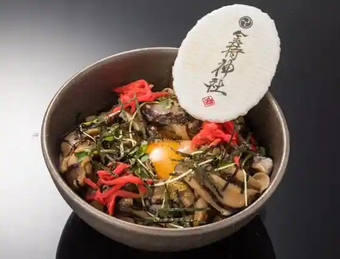
Furusato Nichinan Mura
レストラン にちなん高原の駅
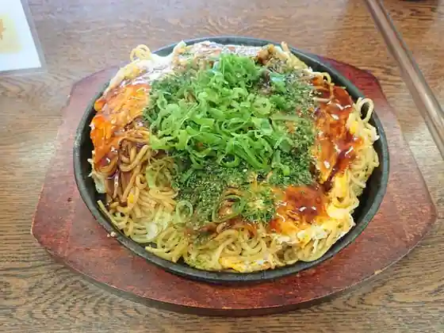
Restaurant Nichinan Kogen No Eki
日南病院レストラン
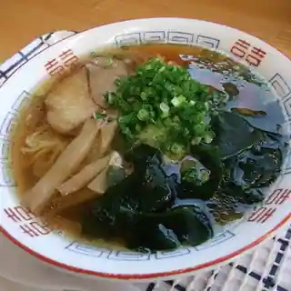
Nichinan Byoin Restaurant
パン屋さくらんぼん
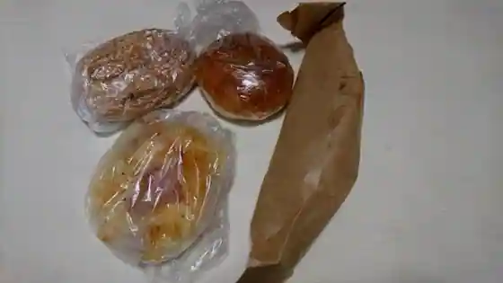
Bakery Ya Sakuranbon
Sights
Raku Raku Fuku Shrine
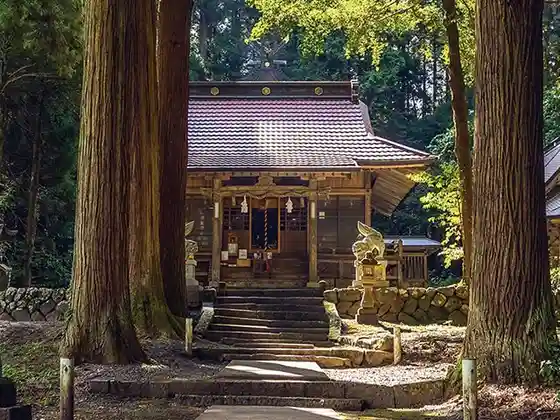
Fukunari Shrine
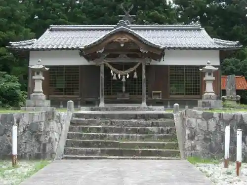
Fune Toriyama
Fukue Shrine
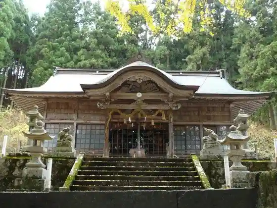
Ishi Kasumi Kei
Oishi Ken Shrine Ohatsukitaikoicho
Kameyama Park
Habudeizu Abonrii
Nichinan Town Hall